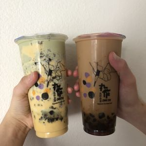

<!DOCTYPE html>
<html lang="en">
    <meta charset="UTF-8">
    <title>Matcha Brulee Boba</title>
</html>

<body> 
    <h1>Matcha Brulee Boba</h1>

    
</body>

<body> 
    <h4>Description</h4>
    <p>around the world. Pearls, or boba, was added which are made from tapioca starch and flour.</p>
    <p>Covered in brown sugar the pearls rest at the bottom of the drink while you add the tea and milk</p>
    <p>above the pearls. Different teas can be used, in this recipe matcha tea is used.</p>

    <h4>Ingredients for Matcha Brown Sugar Boba Drink</h4>
        <ul>
            <li>Matcha tea (1g matcha powder +2 oz hot water)</li>
            <li>1/4 tapioca pearls</li>
            <li>2 tbsp brown sugar syrup (or muscovado sugar)</li>
            <li>1 cup milk of choice</li>
            <li>1/2 cup of ice</li>
        </ul>
    <h4>Cream + Torched Top</h4>
        <ul>
            <il>1/4 cup heavy whipping cream (whisk 1-2 min)</il>
            <il>1 tbsp granulated sugar (1 tsbp more for torched top)</il>
        </ul>
</body>

<body>

    <h4>Directions</h4>
        <ol>
        <h4>Step 1</h4>
            <il>Add tapioca pearls to cup of choice</il>

        <h4>Step 2</h4>
            <il> Drizzle brown sugar syrup around the cup</il>
        <h4>Step 3</h4>
            <il> Add milk and ice</il>
        <h4>Step 4</h4>
            <il>Add matcha and cream</il>
        <h4>Step 5</h4>
            <il> Top with sugar</il>
        <h4>Step 6</h4>
            <il>Optional: Torch for the creme brulee effect !</il>
        </ol>

</body>